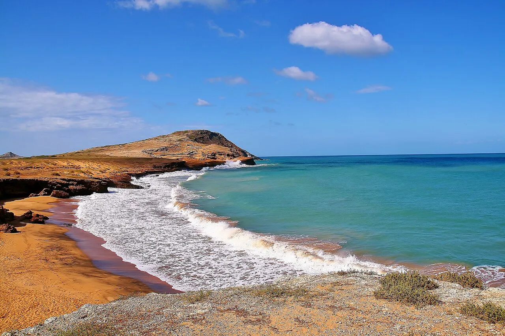

Cabo de la Vela
La Guajira, Colombie · kitesurf

Désert qui plonge dans la mer des Caraïbes, balayé par les alizés. Paysage lunaire et culture wayuu.
- Lieu
- La Guajira, Colombie
- Niveau
- Intermédiaire
- Activités
- kitesurf
- Type d'eau
- Mer / océan
- Coordonnées
- 12.20, -72.15 (position approximative du secteur)
Dangers à connaître
- Vent très fort.
- Isolement.
Le conseil d'Ocean Buddy
Loge chez l’habitant wayuu et apporte de l’eau.
Ouvrir dans Ocean Buddy Télécharger sur l'App Store
Source : Fiche Ocean Buddy · septembre 2026 · à vérifier localement.